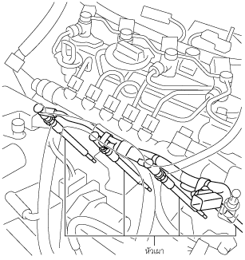
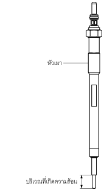
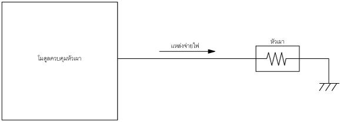

หัวเผา [SKYACTIV-D 2.2]
id0113z7706200
จุดประสงค์/การทำงาน
• หัวเผาจะเพิ่มอุณหภูมิการอัดโดยการให้ความร้อนภายในห้องเผาไหม้ก่อน
โครงสร้าง
• หัวเผาจะติดตั้งอยู่ที่ฝาสูบ

ac5wzn00002199
• หัวเผาเซรามิกแบบอุ่นเร็วได้ถูกนำมาใช้ซึ่งจะช่วยลดระยะเวลาที่ต้องใช้ในการสตาร์ทเครื่องยนต์โดยการเพิ่มอุณหภูมิ

ac5wzn00002200
การทำงาน
• หัวเผาจะให้ความร้อนโดยกำลังไฟฟ้าที่จ่ายจากโมดูลควบคุมหัวเผา

ac5wzn00002201